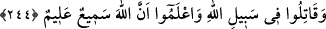

244. Allah yolunda savaşın ve bilin ki Allah, her şeyi işitir ve bilir.
Hitap ümmet-i Muhammed’edir. Yâni “Ey Muhammed ümmeti! Allah’ın emrine itâat
edip ölümden kaçmanın mümkün olmadığını ve kaderin muhakkak vukû bulacağını
bilerek Allah’ın dinini yüceltmek gayesiyle O’nun yolunda savaşın. Böylece şu iki
nasîbten birisini elde etmekten mahrum kalmayın: Ya zafer ve sevap veya Melik ü
Vehhâb olan Allah yolunda ölüm.
Biliniz ki Allah semî’dir; cihâda koşup başkalarını da cihâda teşvik edenlerin
söyledikleri sözleri ve cihaddan geri kalanların da, diğer kimseleri cihaddan caydırmak
için yaptıkları konuşmaları işitir. Alîm’dir; onların, içlerinde gizledikleri her şeyi;
savaştan geri kalanın hangi maksadla geri kaldığını, savaşa gidenin de hangi sebeple;
Allah için mi yoksa dünyalık için mi, savaşa gittiğini bilir.
Allah Teâlâ’nın “görmedin mi?” hitâbı, ölüm korkusuyla yurtlarından çıkan
kimselerin hallerini kötüleme maksadıyla vârid olmuştur. Cenâb-ı Hak onların, ölümden
kaçmak için memleketlerini terketmelerini, kurtuluş ümitlerini yok etmekle
cezalandırmıştır. Bütün bunlar, vebâ salgını olan bir yerden kaçmanın kerâhetine delâlet
etmektedir. Bu âyetle, vebâ çıkan yerde kalmanın daha iyi ve faydalı olduğu bildirilmek
istenmiştir. Hadis-i şerifte buyurulmuştur ki: “Vebâdan kaçan, savaştan kaçan
gibidir.”[198] Bu hadis, vebâdan kaçmanın haramlığına ve böyle davranmanın büyük
günah olduğuna delildir.[199]
Rivâyete göre Abdülmelik, vebâdan kaçmak üzere geceleyin binitine binip çıktı.
Yanında bir de çocuk vardı. Çocuk, binit üzerinde uyukluyordu. Abdülmelik ona dedi
ki:
–“Bana bir şeyler söyle!” Çocuk:
–“Ben kimim ki sana bir şeyler söyliyeyim?” dedi. Abdülmelik:
–“Her olay hakkında işittiğin bir şey vardır. İşte onlardan anlat,” dedi. Çocuk dedi ki:
“Bana ulaştığına göre vaktiyle bir tilki, kendisini istediği şeylerden koruması için bir
aslana hizmet eder, aslan da onu korurmuş. Tilki bir gün bir kartal görünce aslana
sığınmış. Aslan onu sırtına oturtmuş. Kartal süzülerek gelmiş ve tilkiyi gagalayıp
parçalamaya başlamış. Tilki şöyle bağırmış: “Ey aslan! Bana olan sözünü hatırla ve
imdâdıma yetiş.” Bunun üzerine aslan demiş ki:
–“Ben, seni ancak yeryüzü ehlinden korumaya güç yetirebilirim. Ben seni semâ
ehlinden koruyamam.”
Bu fıkrayı dinleyen Abdülmelik çocuğa: “Bana öğüt verdin ve bunu becerdin” dedi.
Kazâya râzı olarak vebâdan kaçmaktan vazgeçti.